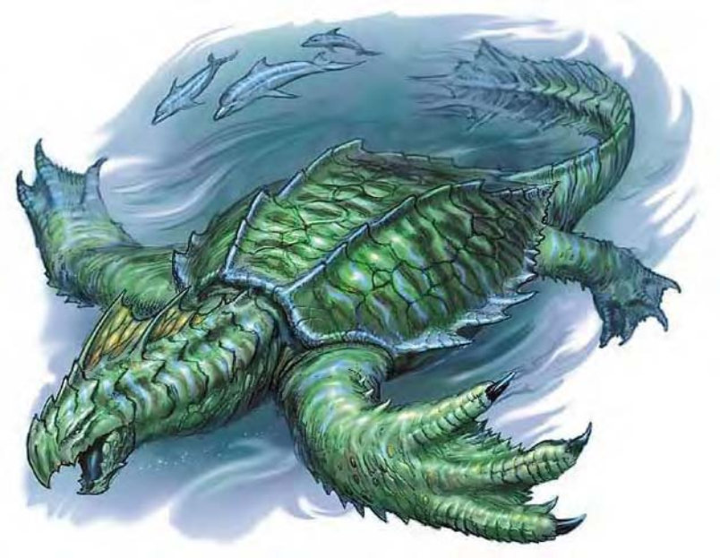

| 资料栏位 | 龙龟 (Dragon Turtle) 超大型龙（水生） |
| 生命骰 | 12d12+60（138HP） |
| 先攻 | +0 |
| 速度 | 20英尺（4格）、游泳30英尺 |
| 防御等级 | 25（-2体型、+17天生）、接触8、措手不及25 |
| 基本攻击/擒抱 | +12 / +28 |
| 攻击 | 啮咬+18近战（4d6+8） |
| 全力攻击 | 啮咬+18近战（4d6+8）及2爪抓+13近战（2d8+4） |
| 占据/触及 | 15英尺 / 10英尺 |
| 特殊攻击 | 喷吐攻击、攫取、倾覆 |
| 特殊能力 | 黑暗视觉60英尺、对火焰免疫、对火焰、"睡眠术"及麻痹免疫、昏暗视觉、灵敏嗅觉 |
| 豁免 | 强韧+13、反射+8、意志+9 |
| 属性 | 力量27、敏捷10、体质21、智力12、感知13、魅力12 |
| 技能 | 交涉+3、躲藏+7*、威吓+16、聆听+16、搜索+16、察言观色+16、侦察+16、生存+16（追踪+18）、游泳+21 |
| 专长 | 盲战、顺势斩、精通冲撞、猛力攻击、攫取 |
| 环境 | 温带水域 |
| 组织 | 单独 |
| 挑战级数 | 9 |
| 宝藏 | 三倍标准 |
| 阵营 | 通常绝对中立 |
| 进化 | 13-24HD（超大型）；25-36HD（巨型） |
| 等级修正值 | ― |
这种生物宽阔的流线型甲壳上有多条锯齿状的突起。有冠的头部长着锐利的大嘴，以长颈与壳的一端相连。带爪的鳍肢从甲壳边缘的洞里伸出，壳的后端延伸出一条长尾巴。
龙龟是水中最美丽、最惊人但也最可怕的生物。一张大嘴强而有力，会喷出高热蒸气，而且还常常倾覆船只，让水手闻之色变。
因为龙龟身上披覆深绿色凹凸不平的甲壳，就和深海的颜色几无二致，当它浮上水面时，身上也会带有闪闪的银光，往往会被误认为太阳或月亮在水面反映的光影。龙龟的四肢、尾巴和头部则呈浅绿色，边缘带有金色条纹。成年龙龟从鼻尖到尾端的长度介于20到30英尺，甲壳直径15到25英尺，重约8000到12000磅。
龙龟通晓水族语、龙语和通用语。
战斗龙龟生性非常凶猛，会主动攻击任何侵入领域或是看起来很好吃的生物。
喷吐攻击（超自然）：龙龟能喷出高20英尺宽25英尺长50英尺的高热蒸气，每1d4轮可使用一次，造成12d6点火焰伤害，通过反射检定（DC=21）则伤害减半，在陆地上和水中都能发挥作用，豁免检定DC的调整值与体质调整值相同。
倾覆（特异）：潜在水中时，龙龟可以从船只正下方直接浮出水面，只要船只长度不超过20英尺，就有95%的机会翻覆。若船只长度介于20到60英尺，则有50%机率翻覆。船只长度超过60英尺的话，翻覆机率只有20%。
技能：龙龟在进行任何特殊动作或闪身避祸时，"游泳"检定具有+8种族加值。即使分心或受困，在进行"游泳"检定时都可以随时取10。若以直线前进，则可在游泳时进行奔跑动作。*潜在水中时，龙龟在进行"躲藏"检定时具有+8种族加值。